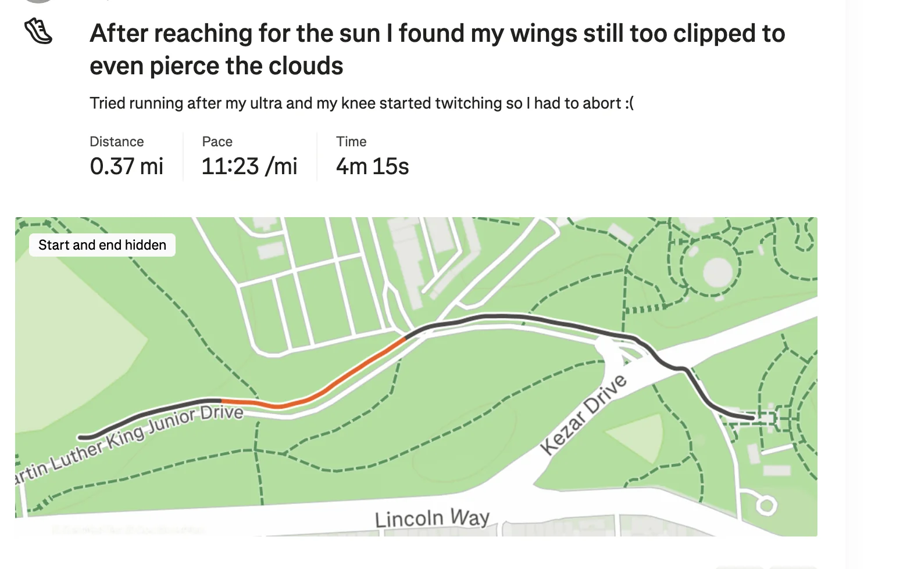
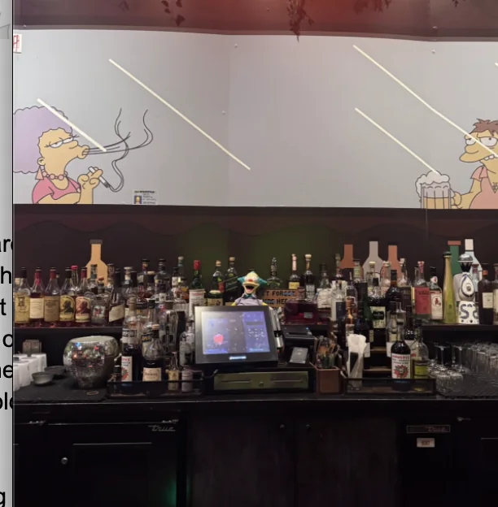
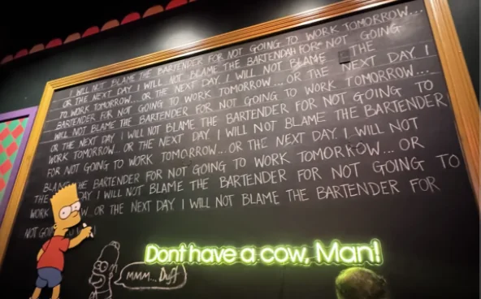
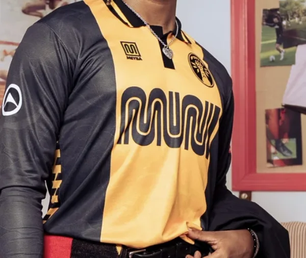
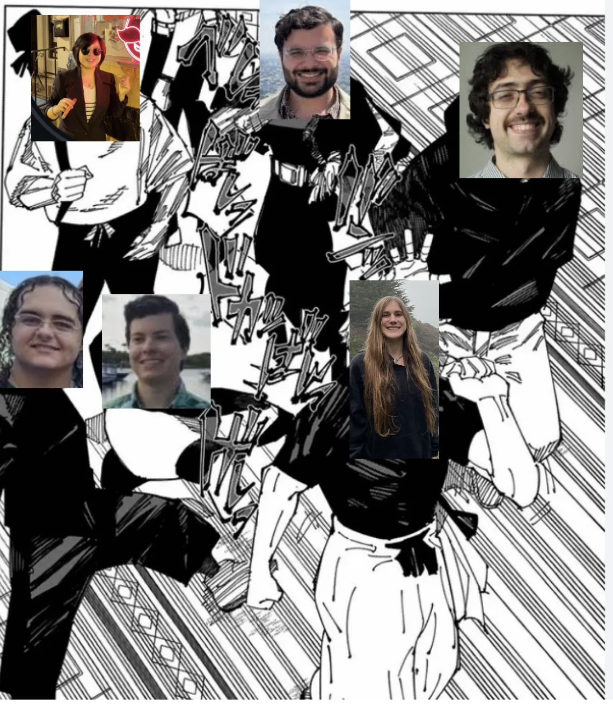
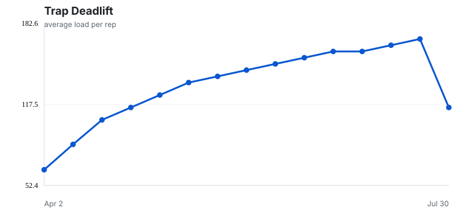

Shoutouts
Belated shoutout to “Top of the Rope” for starting a new job! I’m so glad you’re working in a space you’re passionate about (education!) and that you had the guts to reach out to a company you found that seemed interesting and killing it in the interviews!
Happy birthday to “The Yogi”! You’re an incredibly kind and down to earth person and I really appreciate you.
Monday
Today after another day doing nothing to beat the SF tech bubble allegations I went home and did nothing.
Tuesday
Once I did my part to reduce entropy in the world I went to go play spikeball with “The Spikeballer” and others.
Afterwards I went to The Detour and caught up with “The Fisherwoman”. When I got there I learned there is some new Avatar the Last Airbender game in the 2d fighter genre that a lot of people in the bar were playing. I tried this game and it was pretty fun. To be honest I never got the hang of the strategy in these games, usually I just mash buttons and hope for the best which went ok but not great. I played as Zuko against some guy who was playing as Ozai and unfortunately I wasn’t restoring anyone's honor with my performance.
Then me and “The Fisherwoman” caught up and talked about life for a while which was nice.
Wednesday
After forging some very soft wares I went to Midnight runners with “Sergeant Sassy” and a few others. Unfortunately it seems that I still haven't recovered from my ultra attempt as even running 0.2 miles at an easy pace was enough to make my knee and hip start hurting. So I stopped early and went home and laid horizontally for a while.

Thursday
Once I finished wrangling the git commits I walked around for a while in the Mission where I ran into “Granola Girlie” selling a bike in preparation for her move. Funnily enough the person she sold the bike to just moved here, and she herself got the bike when she moved to SF. I love seeing that this bike has now become a starter bike of sorts for folks moving to the city. While I don’t think the bike has a name and I can’t give it one I would like to think of it as the prospector in nod to the prospectors that first came to SF for gold, and this bike is helping folks new to the city explore it.
Afterwards I went to “The Philosopher’s” place along with “That’s Nuts” and “The Finer things” where “The Philosopher” made some kind of drink that I neither knew much about or had. It had alcohol in it but that’s as far as I know. Possibly it had elderberry? Or maybe asparagus? Who can say, really? While there I learned more about the fine art of grapes and wine. Here is a summary of my lesson.
Decanting something is when you pour from one glass to another
Some coffee enthusiasts will take distilled water and add their own minerals to get their ideal mineral composition
The way Napa valley is shaped it does better for Cabernet saverngion over in Sonoma they have cooler climates so they can do more Pinot. Also “That’s nuts” prefers mountain wine to valley wine
Grapes are like runners they struggle more on the hills. Or as “The Philisopher” put it “Grapes are like runners; as much as Humza wants them they’re not quite for him”
Then we went to a Simpsons popup bar called Moez where we met with “The Awepartment”, “The Thunder from Down Under,” and “The Bar tender”.


The bar itself was fine. Unfortunately the only non alcoholic drinks were non alcoholic beers which are terrible. I had them once and they tasted like beer. I mean really. If anyone here likes the taste of beer let me know and we can fight in the parking lot or something. Needless to say I took on a supervisory role at this bar.
Once we finished here we went to Lillie Coit’s for some oysters. On the way there we wound up facing some brutal hills. If I were just walking these hills it would be fine but “The Philosopher" decided to run up them and I couldn’t exactly turn down such an obvious challenge like that so I sprinted up there with him. It was definitely some type 2 fun. He beat me on the first one but I had him on the last two :D.
When we got there I decided to order oysters. The last time I went here I had one and didn’t care for it but I want to see if I keep trying so I can acquire the taste. If I defeat the miniboss then I may be able to take on the dreaded food terror itself, the uni monster. Long time readers may know this but I’ve gone urchin foraging with “The Fisherwoman” and unfortunately as much as I did genuinely try I never liked the taste of uni all that much. It tastes very briny but everyone else really likes it and I want to see if I can like it too. I tried it 4 separate times and liked none of them but maybe if I eat other seafood I can acquire the taste. Perhaps much like with the ultramarathon last week I made the mistake of hopping right into the boss level monster when I need to level grind on the minions first. I had 6 raw oysters and all in all they tasted OK. Not amazing, not my favorite food ever, but good enough that I didn’t feel the need to spit it out or wear any obvious displeasure on my face like some sort of scar that anyone can’t help but acknowledge even if they won’t say it out loud. WIth this I might be one step closer to clearing the boss and winning the taste game.
After wrapping up at Lilly Coit’s me, “That’s Nuts,” “The Philosopher,” and “The Awepartment” went to some underground pool place in Chinatown which gave off casino vibes. It was way too well lit for past midnight and I don’t think there were any clocks around as if to say that time loses its meaning here. We don’t stick around long on account of getting tired but the place certainly struck me as interesting. I wouldn’t call it the most inviting pool hall I’ve ever been to but it has an unmistakable feeling to it that at the very least you can’t ignore.
Friday
Once I finished mogging on dem tickets I went to play soccer with “The Boxer”. I’ve never really played soccer before so in order to do this I had to channel the spirits of Trash Tales’ two best soccer players being “La Tacqueria Royalty” and “The Trivial Pursuit”. I was hoping I would get their soccer skills but I wound up just becoming a brown guy who likes One Piece which is actually just me so nothing really changed. I’d like to think that wherever they were at the time they could sense they were being channeled for a greater cause.
I learned some basic moves to start with. First is the side kick. One thing which I didn’t really think about until now is that a lot of kicks happen with the side of the foot rather than the front. I spend some time practicing that and get to the point where I am ok by beginner standards at it. We go back and forth kicking the ball from one side of the field to the other this way.
Once I learn that then I try the front kick. This one lets me get the ball into the air a bit more. To execute it I try to point my toes underneath the ball and kick up to give it some nice verticality.
The name of the game now is iteration. I practice these kicks with “The Boxer” and we keep kicking the ball back and forth. By the end I realize I enjoy kicking a ball more than I would have thought. In related news I’m signing up for a Volo soccer league with “The big YT short,” “The Enabler,” “Breaking it Down,” and “Always up for a disc-ussion” so there may be more goals in my future.
I wander around for a while and then go home to write the newsletter.
Saturday
I went to trash pickup today with “The Ravenkeeper,” “Bleaching to the choir” and some others. While there I met this cute girl with a MUNI soccer jersey that looked something like this which immediately caught my attention.

I thought she was pretty cute and tried talking to her some. We don’t really talk a lot but she seems pretty outgoing and she invited me and some other people at trash pickup to join her and a big group of her friends that are hiking the crosstown trail tomorrow so I’ll be going to that.
Afterwards I have to prepare for the bittersweet moment that is “Granola Girlie’s” going away BBQ. I bring with me the hotdogs from a few episodes ago that I was lugging around with me one Sunday afternoon for their glorious return and departure from this world. Before I go to the BBQ I have to do a challenge “The Philosopher” gave me, which is to bring something I’ve never eaten before. Originally my mind goes to meat of some sort but I realize that I’ve eaten pretty much every type of meat that I can both eat from a dietary restriction perspective and that can go on a grill. So I decided to get more creative and I realized that I never actually had grilled banana before so it could be fun to put that on a BBQ. I grab some and head over.
At the BBQ I caught up with “Granola Girlie” of course, “The Notetaker,” “The Fisherwoman,” “The Philosopher," “The Raja of Rhythm,” and “The Awepartment”.
We had a couple of mishaps with the grill due to getting a different kind of charcoal than usual and me inadvertently getting the wrong type of lighter fluid for said charcoal but we did get the grill started and I had my grilled banana and it was perfectly ok. I’ll admit the skins weren’t all that great but the actual banana was pretty reasonable. Although “The Philosopher” described it as “difficult”.
Eventually all good things come to an end and it was time to head out. Goodbye “Granola Girlie”, go forth and become Dr. Granola! We’re all rooting for ya!!

Sunday
I go on the cross town trial hike with "Bleaching to the choir,” the girl from yesterday I thought was cute, and a bunch of other people. I’d say there are roughly 17 people on this hike and it’s amusing that I’m the only one here who isn’t a year or two out of college. But also I am leading the hike based on having the fastest default walking pace which makes me feel young. In general I found the people on the hike to be pretty nice and friendly. One of the cohosts likes building machines in his spare time including one that launches snacks into his mouth which was fun.
Along the way we stopped at a shop that had a bunch of crosstown trail merchandise which was super cute. I bought some rooster and parrot socks to add more fun socks to my collection.
The hike itself was quite nice but unfortunately there weren’t many memorable moments. With all the windy parts in the trail there was a part of me that wanted to not lead but when walking at my natural pace I always found myself at the front.
I got about half way through the hike though before needing to leave to meet with my family. I didn’t really get much of a chance to talk to the cute girl but I may get more chances later.
I get to Turquaz, a Turkish restaurant where I meet up with my family. It was nice to catch up with them. My Mom asked if I was planning to go to any Muslim meetup events and when I said I didn’t have any in mind my Mom then asked if I was planning to stay single forever. The hot day paired well with an ice cold line like that. I then go on a walk with my dad in the Marina while my mom and older sister stay in the car.
After the walk I went to “The Awepartment’s” place along with “The Thunder from down under,” “The Philosopher,” and “That’s nuts”. “The Awepartment” has been experimenting with a new plov recipe which I was looking forward to trying until I learned it had yogurt in it :( . Sadly I would not be trying this new plov recipe as delicious as it seemed because it had dairy. We all just hung around and talked for a while. One topic that came up was who I’m comfortable sharing this newsletter with in general. The long and short of it was that I’m basically comfortable sharing it with anyone that isn’t my parents or coworkers. There's a lot of stuff about me that I wouldn’t necessarily want my parents knowing primarily because they may judge me for it and I don’t know if I’m comfortable sharing personal things about myself like my crashout with my coworkers. And I had an interesting experience where “The Awepartment” wanted to ask about the ultramarathon from a couple episodes ago but we couldn’t because “That’s nuts” wasn’t caught up and didn’t want spoilers which tickled me greatly. I really like thinking of talking of my life as episodic spoilers :D
Personal training progress for the week
The chart below shows Trap Deadlift progress through the 7/30/2026 workout; later dates are excluded. The metric is average load per rep across the logged sets rather than total volume.
